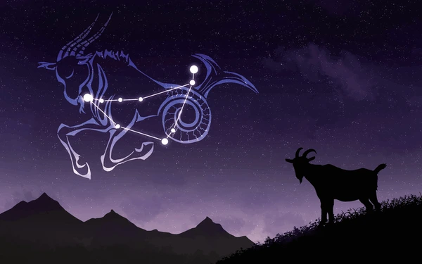

Capricorn (Constellation)
► Located in the Southern Hemisphere, Capricornus represents a creature that is a blend of fish and goat; the name means "goat horn" in Latin. Capricornus is among the faintest constellations, just brighter than Cancer. The 40th largest constellation, Capricornus measures 414 square degrees. It sits among the other constellations of the water genre, including the water-bearer Aquarius, the whale-like sea monster Cetus, the fishes Pisces, and the river Eridanus. ◄
► Capricornus is a faint constellation, with only one star above magnitude 3; its alpha star has a magnitude of only 3.6. It is the smallest constellation in the zodiac. ◄
